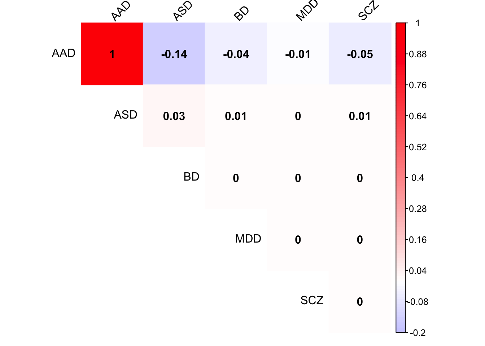
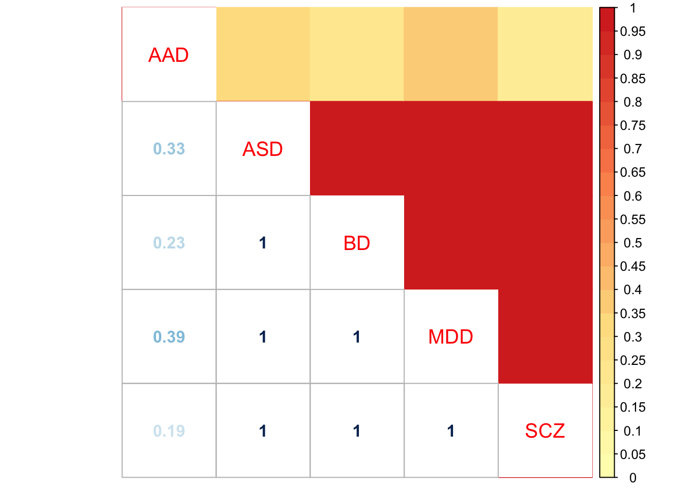

Mashcommonbaseline
Yuxin Zou
2018-5-10
Last updated: 2018-05-12
workflowr checks: (Click a bullet for more information)-
✔ R Markdown file: up-to-date
Great! Since the R Markdown file has been committed to the Git repository, you know the exact version of the code that produced these results.
-
✔ Environment: empty
Great job! The global environment was empty. Objects defined in the global environment can affect the analysis in your R Markdown file in unknown ways. For reproduciblity it’s best to always run the code in an empty environment.
-
✔ Seed:
set.seed(20180510)The command
set.seed(20180510)was run prior to running the code in the R Markdown file. Setting a seed ensures that any results that rely on randomness, e.g. subsampling or permutations, are reproducible. -
✔ Session information: recorded
Great job! Recording the operating system, R version, and package versions is critical for reproducibility.
-
Great! You are using Git for version control. Tracking code development and connecting the code version to the results is critical for reproducibility. The version displayed above was the version of the Git repository at the time these results were generated.✔ Repository version: 326232c
Note that you need to be careful to ensure that all relevant files for the analysis have been committed to Git prior to generating the results (you can usewflow_publishorwflow_git_commit). workflowr only checks the R Markdown file, but you know if there are other scripts or data files that it depends on. Below is the status of the Git repository when the results were generated:
Note that any generated files, e.g. HTML, png, CSS, etc., are not included in this status report because it is ok for generated content to have uncommitted changes.Ignored files: Ignored: .Rhistory Ignored: .Rproj.user/ Untracked files: Untracked: .DS_Store Untracked: data/.DS_Store Untracked: data/raw_data/ Untracked: data/results/.DS_Store Untracked: data/results/tables/ Untracked: data/working_data/
Expand here to see past versions:
| File | Version | Author | Date | Message |
|---|---|---|---|---|
| Rmd | 326232c | zouyuxin | 2018-05-12 | wflow_publish(“analysis/MashCommonbaseline.Rmd”) |
| html | 4a8a857 | zouyuxin | 2018-05-12 | Build site. |
| Rmd | 12acda1 | zouyuxin | 2018-05-12 | wflow_publish(“analysis/MashCommonbaseline.Rmd”) |
| html | c74944f | zouyuxin | 2018-05-11 | Build site. |
| Rmd | 24354db | zouyuxin | 2018-05-11 | mash models |
| html | 5148e0b | zouyuxin | 2018-05-10 | Build site. |
| Rmd | 9dae4f1 | zouyuxin | 2018-05-10 | wflow_publish(“analysis/MashCommonbaseline.Rmd”) |
| html | 60c0e2f | zouyuxin | 2018-05-10 | Build site. |
| Rmd | fc22b3f | zouyuxin | 2018-05-10 | wflow_publish(“analysis/MashCommonbaseline.Rmd”) |
library(limma); library(mashr); library(mclust); library(plyr);Loading required package: ashrPackage 'mclust' version 5.4
Type 'citation("mclust")' for citing this R package in publications.
Attaching package: 'mclust'The following object is masked from 'package:ashr':
denslibrary(flashr); library(colorRamps); library(corrplot)corrplot 0.84 loadeddata = readRDS('../data/results/Microarray_compiledGLM.rds')Mash
The standard errors in the data are from t distribution with df 452. Since pt(-abs(Bhat/Shat), df) is very close to zero, it is hard to obtain the standard error from the normal distribution. The degree of freedom is large here, we use the original standard error.
mash.data = mash_set_data(Bhat = data$Chat, Shat = data$SE)
L = diag(ncol(data$Chat))
# the 4th col is CTL
L[,4] = -1
row.names(L) = colnames(data$Chat)
L = L[-4,]
mash.data.diff = mash_set_data_contrast(mash.data, L)Top genes:
# find strong genes
m.1by1 = mash_1by1(mash.data.diff, alpha=0)
strong = get_significant_results(m.1by1)
# almost all genes are strong
set.seed(100)
strong.sample = sample(strong, length(strong)/2, replace = FALSE)
Z = mash.data.diff$Bhat/mash.data.diff$Shat
Z.strong = Z[strong.sample,]
# center
Z.center = apply(Z.strong, 2, function(x) x - mean(x))Estimate covariance structures:
Data Driven:
Flash:
flash.data = flash_set_data(Z.center)
fmodel = flash(flash.data, greedy = TRUE, backfit = TRUE)fitting factor/loading 1fitting factor/loading 2fitting factor/loading 3fitting factor/loading 4fitting factor/loading 5factors = flash_get_ldf(fmodel)$f
row.names(factors) = row.names(L)
pve.order = order(flash_get_pve(fmodel), decreasing = TRUE)
par(mfrow=c(2,2))
for(i in pve.order){
barplot(factors[,i], main=paste0('Factor ',i, ' pve= ', round(flash_get_pve(fmodel)[i],3)), las=2, cex.names = 0.7)
}
Expand here to see past versions of flash plot-1.png:
| Version | Author | Date |
|---|---|---|
| 4a8a857 | zouyuxin | 2018-05-12 |
| 5148e0b | zouyuxin | 2018-05-10 |
| 60c0e2f | zouyuxin | 2018-05-10 |
par(mfrow=c(1,1))flash on the loading:
loading = fmodel$EL[,1:4]
colnames(loading) = paste0('Factor',seq(1,4))
flash.loading = flash_set_data(loading)
flmodel = flash(flash.loading, greedy = TRUE, backfit = TRUE)fitting factor/loading 1The flash prefers the rank 0 model. There is no hidden structure in the loading matrix.
Cluster loadings:
mod = Mclust(loading)
summary(mod$BIC)Best BIC values:
VVI,9 VVE,9 VVE,8
BIC 3861.542 3822.14394 3744.2387
BIC diff 0.000 -39.39761 -117.3028Using clustering result to fit mash:
\[l_{i}\sim \sum_{j=1}^{m}N(\mu_{j}, \Sigma_{j})\] We estimate the covariance as \(F(\Sigma_j + \mu_{j}\mu_{j}')F'\).
U_list = alply(mod$parameters$variance$sigma,3)
mu_list = alply(mod$parameters$mean,2)
ll = list()
for (i in 1:length(U_list)){
ll[[i]] = U_list[[i]] + mu_list[[i]] %*% t(mu_list[[i]])
}
Factors = fmodel$EF[,1:4]
U.loading = lapply(ll, function(U){Factors %*% (U %*% t(Factors))})
names(U.loading) = paste0('Load', "_", (1:length(U.loading)))
# rank 1
Flash_res = flash_get_lf(fmodel)
U.Flash = c(mashr::cov_from_factors(t(as.matrix(factors)), "Flash"),
list("tFlash" = t(Flash_res) %*% Flash_res / nrow(Z.center)))PCA:
U.pca = cov_pca(mash_set_data(Z.center), 3)Canonical
U.c = cov_canonical(mash_set_data(Z.center))Extreme Deconvolution
U.dd = c(U.pca, U.loading, U.Flash, list('XX' = t(Z.center) %*% Z.center / nrow(Z.center)))
mash.data.ed = mash.data.diff
mash.data.ed$Bhat = mash.data.diff$Bhat[strong,]
mash.data.ed$Shat = mash.data.diff$Shat[strong,]
mash.data.ed$Shat_alpha = mash.data.diff$Shat_alpha[strong,]
saveRDS(cov_ed(mash.data.ed, U.dd), '../output/MashCB_EE_Cov.rds')Mash model:
U.ed = readRDS('../output/MashCB_EE_Cov.rds')saveRDS(mash(mash.data.diff, c(U.c, U.ed), algorithm.version = 'R'), '../output/MashCB_model_EE.rds') Result
mash.model = readRDS('../output/MashCB_model_EE.rds')The log-likelihood of fit is
get_loglik(mash.model)[1] 65270.31Here is a plot of weights learned:
options(repr.plot.width=12, repr.plot.height=4)
barplot(get_estimated_pi(mash.model), las = 2, cex.names = 0.7)
Expand here to see past versions of estimated weight-1.png:
| Version | Author | Date |
|---|---|---|
| 4a8a857 | zouyuxin | 2018-05-12 |
| 5148e0b | zouyuxin | 2018-05-10 |
| 60c0e2f | zouyuxin | 2018-05-10 |
Check Load 2 covariance matrix
x <- mash.model$fitted_g$Ulist[["ED_Load_2"]]
colnames(x) <- row.names(L)
rownames(x) <- colnames(x)
corrplot(x, method='color', cl.lim=c(-0.2,1), type='upper', addCoef.col = "black", tl.col="black", tl.srt=45, col=colorRampPalette(c("blue","white","red"))(200))Expand here to see past versions of Load2-1.png:
| Version | Author | Date |
|---|---|---|
| 4a8a857 | zouyuxin | 2018-05-12 |
layout(matrix(c(1,2,3,4), 2, 2, byrow=TRUE))
svd.out = svd(mash.model$fitted_g$Ulist[["ED_Load_2"]])
v = svd.out$v
colnames(v) = row.names(L)
rownames(v) = colnames(v)
options(repr.plot.width=10, repr.plot.height=5)
for (j in 1:4)
barplot(v[,j]/v[,j][which.max(abs(v[,j]))], cex.names = 0.7,
las = 2, main = paste0("EigenVector ", j, " for Load 2"))
Expand here to see past versions of Load2 pca-1.png:
| Version | Author | Date |
|---|---|---|
| 4a8a857 | zouyuxin | 2018-05-12 |
Check Load 4 covariance matrix
x <- mash.model$fitted_g$Ulist[["ED_Load_4"]]
colnames(x) <- row.names(L)
rownames(x) <- colnames(x)
corrplot(x, method='color', cl.lim=c(-0.2,1), type='upper', addCoef.col = "black", tl.col="black", tl.srt=45, col=colorRampPalette(c("blue","white","red"))(200))
Expand here to see past versions of Load4-1.png:
| Version | Author | Date |
|---|---|---|
| 4a8a857 | zouyuxin | 2018-05-12 |
| 5148e0b | zouyuxin | 2018-05-10 |
layout(matrix(c(1,2,3,4), 2, 2, byrow=TRUE))
svd.out = svd(mash.model$fitted_g$Ulist[["ED_Load_4"]])
v = svd.out$v
colnames(v) = row.names(L)
rownames(v) = colnames(v)
options(repr.plot.width=10, repr.plot.height=5)
for (j in 1:4)
barplot(v[,j]/v[,j][which.max(abs(v[,j]))], cex.names = 0.7,
las = 2, main = paste0("EigenVector ", j, " for Load 4"))
Expand here to see past versions of Load4 pca-1.png:
| Version | Author | Date |
|---|---|---|
| 4a8a857 | zouyuxin | 2018-05-12 |
| 5148e0b | zouyuxin | 2018-05-10 |
Check tFlash covariance matrix
x <- mash.model$fitted_g$Ulist[["ED_tFlash"]]
colnames(x) <- row.names(L)
rownames(x) <- colnames(x)
corrplot(x, method='color', cl.lim=c(-0.1,1), type='upper', addCoef.col = "black", tl.col="black", tl.srt=45, col=colorRampPalette(c("blue","white","red"))(200))Expand here to see past versions of tFlash-1.png:
| Version | Author | Date |
|---|---|---|
| 4a8a857 | zouyuxin | 2018-05-12 |
layout(matrix(c(1,2,3,4), 2, 2, byrow=TRUE))
svd.out = svd(mash.model$fitted_g$Ulist[["ED_tFlash"]])
v = svd.out$v
colnames(v) = row.names(L)
rownames(v) = colnames(v)
options(repr.plot.width=10, repr.plot.height=5)
for (j in 1:4)
barplot(v[,j]/v[,j][which.max(abs(v[,j]))], cex.names = 0.7,
las = 2, main = paste0("EigenVector ", j, " for tFlash"))
Expand here to see past versions of tFlash pca-1.png:
| Version | Author | Date |
|---|---|---|
| 4a8a857 | zouyuxin | 2018-05-12 |
Check Flash2 covariance matrix
x <- mash.model$fitted_g$Ulist[["ED_Flash_2"]]
colnames(x) <- row.names(L)
rownames(x) <- colnames(x)
corrplot(x, method='color', cl.lim=c(-0.1,1), type='upper', addCoef.col = "black", tl.col="black", tl.srt=45, col=colorRampPalette(c("blue","white","red"))(200))Expand here to see past versions of Flash2-1.png:
| Version | Author | Date |
|---|---|---|
| 4a8a857 | zouyuxin | 2018-05-12 |
layout(matrix(c(1,2,3,4), 2, 2, byrow=TRUE))
svd.out = svd(mash.model$fitted_g$Ulist[["ED_Flash_2"]])
v = svd.out$v
colnames(v) = row.names(L)
rownames(v) = colnames(v)
options(repr.plot.width=10, repr.plot.height=5)
for (j in 1:4)
barplot(v[,j]/v[,j][which.max(abs(v[,j]))], cex.names = 0.7,
las = 2, main = paste0("EigenVector ", j, " for Flash 2"))
Expand here to see past versions of Flash2 pca-1.png:
| Version | Author | Date |
|---|---|---|
| 4a8a857 | zouyuxin | 2018-05-12 |
There are 4427 diferentially expressed genes.
Check pairwise sharing by sign:
x = get_pairwise_sharing(mash.model, factor=0)
x[x > 1] <- 1
x[x < -1] <- -1
colnames(x) <- row.names(L)
rownames(x) <- colnames(x)
corrplot.mixed(x, tl.pos="d",upper='color', cl.lim=c(0,1), upper.col=colorRampPalette(rev(c("#D73027","#FC8D59","#FEE090","#FFFFBF",
"#E0F3F8","#91BFDB","#4575B4")))(40),
tl.cex=1.2)
Expand here to see past versions of unnamed-chunk-3-1.png:
| Version | Author | Date |
|---|---|---|
| 4a8a857 | zouyuxin | 2018-05-12 |
| 5148e0b | zouyuxin | 2018-05-10 |
| 60c0e2f | zouyuxin | 2018-05-10 |
Check pairwise sharing by magnitude and sign:
x = get_pairwise_sharing(mash.model)
x[x > 1] <- 1
x[x < -1] <- -1
colnames(x) <- row.names(L)
rownames(x) <- colnames(x)
corrplot.mixed(x, tl.pos="d",upper='color', cl.lim=c(0,1), upper.col=colorRampPalette(rev(c("#D73027","#FC8D59","#FEE090","#FFFFBF",
"#E0F3F8","#91BFDB","#4575B4")))(40),
tl.cex=1.2)
Expand here to see past versions of unnamed-chunk-4-1.png:
| Version | Author | Date |
|---|---|---|
| 4a8a857 | zouyuxin | 2018-05-12 |
| 5148e0b | zouyuxin | 2018-05-10 |
| 60c0e2f | zouyuxin | 2018-05-10 |
- Effects compare with SCZ
CompareSCZ = diag(5)
CompareSCZ[,5] = -1
CompareSCZ = CompareSCZ[-5,]
row.names(CompareSCZ) = colnames(mash.data.diff$Bhat)[-5]mash.model.SCZ = mash.model
mash.model.SCZ$result = mash_compute_posterior_matrices(mash.model, mash.data.diff, A=CompareSCZ, algorithm.version = 'R')
saveRDS(mash.model.SCZ, '../output/MashCB_model_EE_CompareSCZ.rds') Check pairwise sharing by sign:
x = get_pairwise_sharing(mash.model.SCZ, factor=0)
x[x > 1] <- 1
x[x < -1] <- -1
colnames(x) <- row.names(CompareSCZ)
rownames(x) <- colnames(x)
corrplot.mixed(x, tl.pos="d",upper='color', cl.lim=c(0,1), upper.col=colorRampPalette(rev(c("#D73027","#FC8D59","#FEE090","#FFFFBF",
"#E0F3F8","#91BFDB","#4575B4")))(40),
tl.cex=1.2)Expand here to see past versions of unnamed-chunk-8-1.png:
| Version | Author | Date |
|---|---|---|
| 4a8a857 | zouyuxin | 2018-05-12 |
Check pairwise sharing by magnitude and sign:
x = get_pairwise_sharing(mash.model.SCZ)
x[x > 1] <- 1
x[x < -1] <- -1
colnames(x) <- row.names(CompareSCZ)
rownames(x) <- colnames(x)
corrplot.mixed(x, tl.pos="d",upper='color', cl.lim=c(0,1), upper.col=colorRampPalette(rev(c("#D73027","#FC8D59","#FEE090","#FFFFBF",
"#E0F3F8","#91BFDB","#4575B4")))(40),
tl.cex=1.2)
Expand here to see past versions of unnamed-chunk-9-1.png:
| Version | Author | Date |
|---|---|---|
| 4a8a857 | zouyuxin | 2018-05-12 |
Session information
sessionInfo()R version 3.4.4 (2018-03-15)
Platform: x86_64-apple-darwin15.6.0 (64-bit)
Running under: macOS High Sierra 10.13.4
Matrix products: default
BLAS: /Library/Frameworks/R.framework/Versions/3.4/Resources/lib/libRblas.0.dylib
LAPACK: /Library/Frameworks/R.framework/Versions/3.4/Resources/lib/libRlapack.dylib
locale:
[1] en_US.UTF-8/en_US.UTF-8/en_US.UTF-8/C/en_US.UTF-8/en_US.UTF-8
attached base packages:
[1] stats graphics grDevices utils datasets methods base
other attached packages:
[1] corrplot_0.84 colorRamps_2.3 flashr_0.5-6 plyr_1.8.4
[5] mclust_5.4 mashr_0.2-8 ashr_2.2-7 limma_3.34.9
loaded via a namespace (and not attached):
[1] Rcpp_0.12.16 pillar_1.2.2 compiler_3.4.4
[4] git2r_0.21.0 workflowr_1.0.1 R.methodsS3_1.7.1
[7] R.utils_2.6.0 iterators_1.0.9 tools_3.4.4
[10] digest_0.6.15 tibble_1.4.2 gtable_0.2.0
[13] evaluate_0.10.1 lattice_0.20-35 rlang_0.2.0
[16] Matrix_1.2-14 foreach_1.4.4 yaml_2.1.19
[19] parallel_3.4.4 mvtnorm_1.0-7 ebnm_0.1-11
[22] stringr_1.3.0 knitr_1.20 REBayes_1.3
[25] rprojroot_1.3-2 grid_3.4.4 rmarkdown_1.9
[28] rmeta_3.0 ggplot2_2.2.1 magrittr_1.5
[31] whisker_0.3-2 scales_0.5.0 backports_1.1.2
[34] codetools_0.2-15 htmltools_0.3.6 MASS_7.3-50
[37] assertthat_0.2.0 softImpute_1.4 colorspace_1.3-2
[40] stringi_1.2.2 Rmosek_8.0.69 lazyeval_0.2.1
[43] munsell_0.4.3 doParallel_1.0.11 pscl_1.5.2
[46] truncnorm_1.0-8 SQUAREM_2017.10-1 R.oo_1.22.0 This reproducible R Markdown analysis was created with workflowr 1.0.1